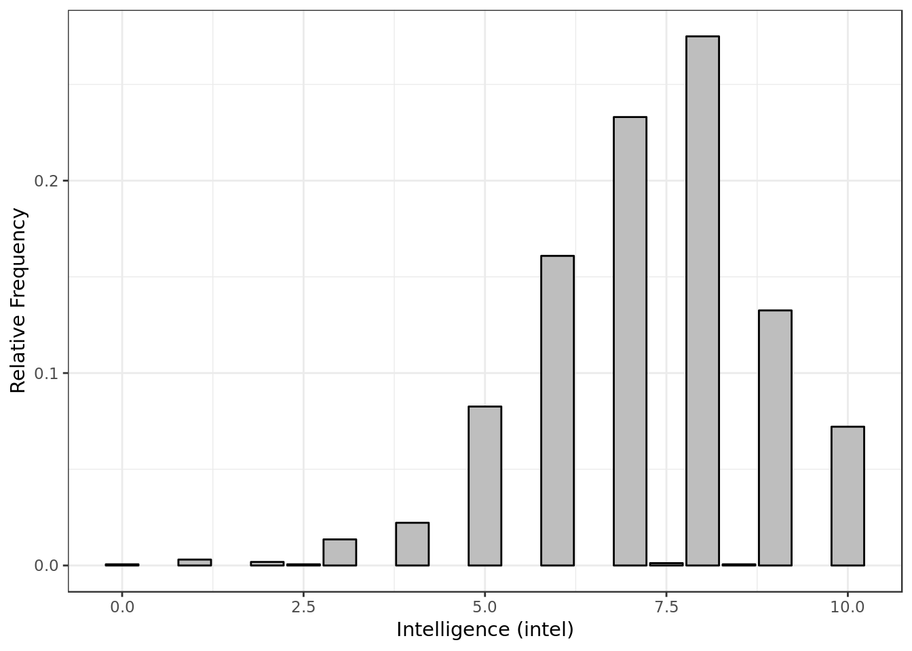
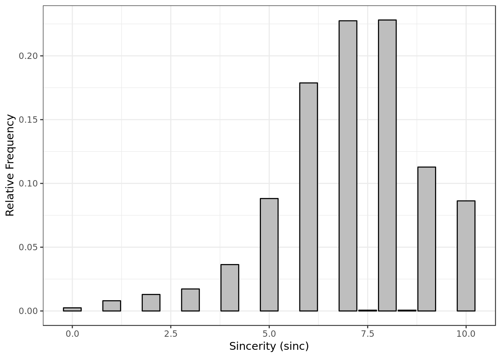
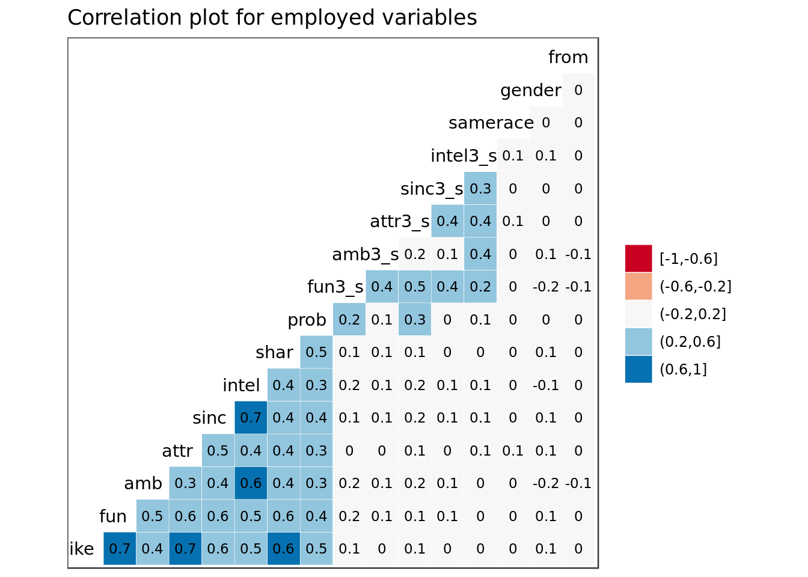
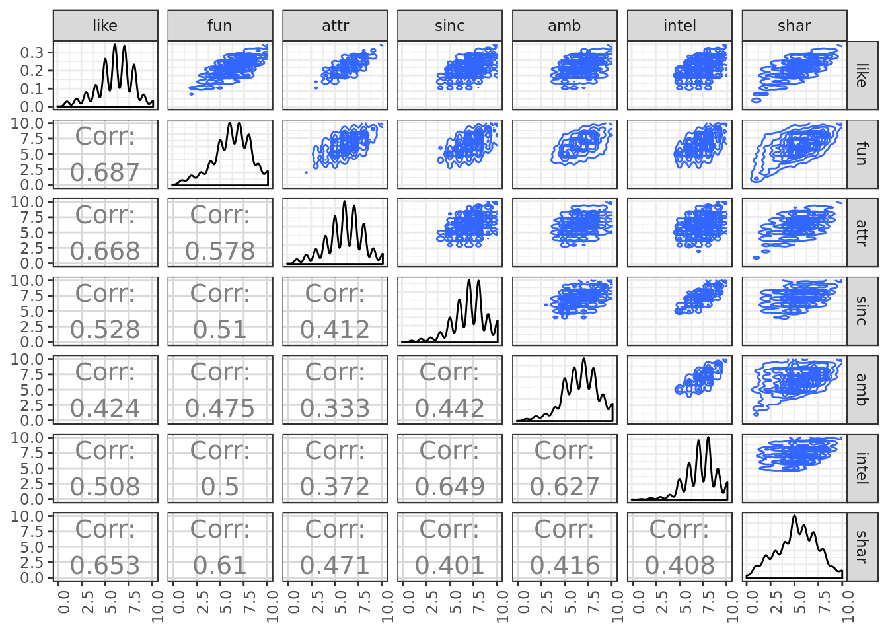
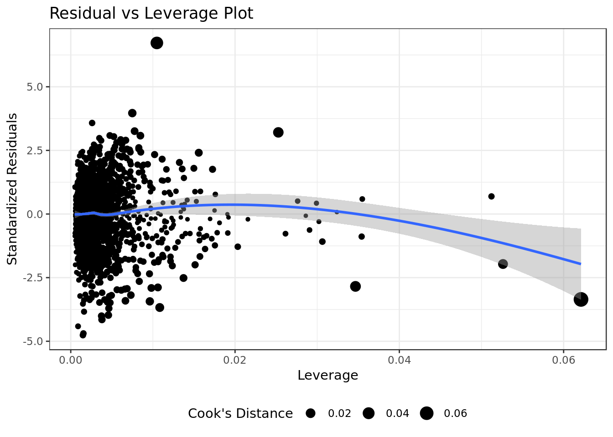

Multivariate linear regression on speed dating data
This report contains regression models created based on data describing 5000 speed dates of 4 minutes of duration involving 310 american young adults. The original data were collected by Columbia Business School professors. Further information and the data itself can be found in this report repository.
Data Overview
The variables
The response variable is the variable that you are interesting in making measurements and conclusions on.
A predictor variable is a variable used in regression to predict another variable.
Our response variable will be "like", we want to study how well the predictor variables can help predict its behavior and how they impact it.- iid : id of the participant p1 in the date
- gender : gender of p1, 0 = woman
- order : of the several dates in the night, this was the nth, according to this variable
- pid : id of participant p2
- int_corr : correlation between the interests of p1 and p2
- samerace : Are p1 and p2 of the same race?
- age_o : Age of p2
- age : Age of p1
- field : field of study of p1
- race : race of p1. The code is Black/African American=1; European/Caucasian-American=2; Latino/Hispanic American=3; Asian/Pacific Islander/Asian-American=4; Native American=5; Other=6
- from : from where p1 comes from
- career : what career p1 wants to follow sports, tvsports, exercise, dining, museums, art, hiking, gaming, clubbing, reading, tv, theater, movies, concerts, music, shopping, yoga : From 1 to 10, how interested p1 is in each one of these activities$
- attr : how attractive p1 thinks p2 is
- sinc : how sincere p1 thinks p2 is
- intel : how smart p1 thinks p2 is
- fun : how fun p1 thinks p2 is
- amb : how ambitious p1 thinks p2 is
- shar : how much p1 believes they both (p1 and p2) share the same interests and hobbies
- like : in general, how much does p1 likes p2?
- prob : how probable p1 thinks it’s that p2 will want to meet again with p- (scale 1-10)
- attr3_s : how attractive p1 believes itself
- sinc3_s : how sincere p1 believes itself
- intel3_s : how smart p1 believes itself
- fun3_s : how fun p1 believes itself
- amb3_s : how ambitious p1 believes itself
data <- read_csv(here("data/speed-dating.csv"),
progress = FALSE,
col_types =cols(.default = col_integer(),
int_corr = col_double(),
field = col_character(),
from = col_character(),
career = col_character(),
attr = col_double(),
samerace = col_character(),
sinc = col_double(),
intel = col_double(),
fun = col_double(),
amb = col_double(),
shar = col_double(),
like = col_double(),
prob = col_double(),
match_es = col_double(),
attr3_s = col_double(),
sinc3_s = col_double(),
intel3_s = col_double(),
fun3_s = col_double(),
amb3_s = col_double())) %>%
mutate(from = as.numeric(factor(from)),
gender = as.numeric(factor(gender)),
samerace = as.numeric(factor(samerace)))
data %>%
glimpse()## Observations: 4,918
## Variables: 43
## $ iid <int> 1, 1, 1, 1, 1, 1, 1, 1, 1, 1, 2, 2, 2, 2, 2, 2, 2, 2,...
## $ gender <dbl> 1, 1, 1, 1, 1, 1, 1, 1, 1, 1, 1, 1, 1, 1, 1, 1, 1, 1,...
## $ order <int> 4, 3, 10, 5, 7, 6, 1, 2, 8, 9, 10, 9, 6, 1, 3, 2, 7, ...
## $ pid <int> 11, 12, 13, 14, 15, 16, 17, 18, 19, 20, 11, 12, 13, 1...
## $ int_corr <dbl> 0.14, 0.54, 0.16, 0.61, 0.21, 0.25, 0.34, 0.50, 0.28,...
## $ samerace <dbl> 1, 1, 2, 1, 1, 1, 1, 1, 1, 1, 2, 2, 1, 2, 1, 2, 2, 2,...
## $ age_o <int> 27, 22, 22, 23, 24, 25, 30, 27, 28, 24, 27, 22, 22, 2...
## $ age <int> 21, 21, 21, 21, 21, 21, 21, 21, 21, 21, 24, 24, 24, 2...
## $ field <chr> "Law", "Law", "Law", "Law", "Law", "Law", "Law", "Law...
## $ race <int> 4, 4, 4, 4, 4, 4, 4, 4, 4, 4, 2, 2, 2, 2, 2, 2, 2, 2,...
## $ from <dbl> 34, 34, 34, 34, 34, 34, 34, 34, 34, 34, 2, 2, 2, 2, 2...
## $ career <chr> "lawyer", "lawyer", "lawyer", "lawyer", "lawyer", "la...
## $ sports <int> 9, 9, 9, 9, 9, 9, 9, 9, 9, 9, 3, 3, 3, 3, 3, 3, 3, 3,...
## $ tvsports <int> 2, 2, 2, 2, 2, 2, 2, 2, 2, 2, 2, 2, 2, 2, 2, 2, 2, 2,...
## $ exercise <int> 8, 8, 8, 8, 8, 8, 8, 8, 8, 8, 7, 7, 7, 7, 7, 7, 7, 7,...
## $ dining <int> 9, 9, 9, 9, 9, 9, 9, 9, 9, 9, 10, 10, 10, 10, 10, 10,...
## $ museums <int> 1, 1, 1, 1, 1, 1, 1, 1, 1, 1, 8, 8, 8, 8, 8, 8, 8, 8,...
## $ art <int> 1, 1, 1, 1, 1, 1, 1, 1, 1, 1, 6, 6, 6, 6, 6, 6, 6, 6,...
## $ hiking <int> 5, 5, 5, 5, 5, 5, 5, 5, 5, 5, 3, 3, 3, 3, 3, 3, 3, 3,...
## $ gaming <int> 1, 1, 1, 1, 1, 1, 1, 1, 1, 1, 5, 5, 5, 5, 5, 5, 5, 5,...
## $ clubbing <int> 5, 5, 5, 5, 5, 5, 5, 5, 5, 5, 8, 8, 8, 8, 8, 8, 8, 8,...
## $ reading <int> 6, 6, 6, 6, 6, 6, 6, 6, 6, 6, 10, 10, 10, 10, 10, 10,...
## $ tv <int> 9, 9, 9, 9, 9, 9, 9, 9, 9, 9, 1, 1, 1, 1, 1, 1, 1, 1,...
## $ theater <int> 1, 1, 1, 1, 1, 1, 1, 1, 1, 1, 9, 9, 9, 9, 9, 9, 9, 9,...
## $ movies <int> 10, 10, 10, 10, 10, 10, 10, 10, 10, 10, 8, 8, 8, 8, 8...
## $ concerts <int> 10, 10, 10, 10, 10, 10, 10, 10, 10, 10, 7, 7, 7, 7, 7...
## $ music <int> 9, 9, 9, 9, 9, 9, 9, 9, 9, 9, 8, 8, 8, 8, 8, 8, 8, 8,...
## $ shopping <int> 8, 8, 8, 8, 8, 8, 8, 8, 8, 8, 3, 3, 3, 3, 3, 3, 3, 3,...
## $ yoga <int> 1, 1, 1, 1, 1, 1, 1, 1, 1, 1, 1, 1, 1, 1, 1, 1, 1, 1,...
## $ attr <dbl> 6, 7, 5, 7, 5, 4, 7, 4, 7, 5, 5, 8, 5, 7, 6, 8, 7, 5,...
## $ sinc <dbl> 9, 8, 8, 6, 6, 9, 6, 9, 6, 6, 7, 5, 8, 9, 8, 7, 5, 8,...
## $ intel <dbl> 7, 7, 9, 8, 7, 7, 7, 7, 8, 6, 8, 6, 9, 7, 7, 8, 9, 7,...
## $ fun <dbl> 7, 8, 8, 7, 7, 4, 4, 6, 9, 8, 4, 6, 6, 6, 9, 3, 6, 5,...
## $ amb <dbl> 6, 5, 5, 6, 6, 6, 6, 5, 8, 10, 6, 9, 3, 5, 7, 6, 7, 9...
## $ shar <dbl> 5, 6, 7, 8, 6, 4, 7, 6, 8, 8, 3, 6, 4, 7, 8, 2, 9, 5,...
## $ like <dbl> 7, 7, 7, 7, 6, 6, 6, 6, 7, 6, 6, 7, 6, 7, 8, 6, 8, 5,...
## $ prob <dbl> 6, 5, NA, 6, 6, 5, 5, 7, 7, 6, 4, 3, 7, 8, 6, 5, 7, 6...
## $ match_es <dbl> 4, 4, 4, 4, 4, 4, 4, 4, 4, 4, 3, 3, 3, 3, 3, 3, 3, 3,...
## $ attr3_s <dbl> NA, NA, NA, NA, NA, NA, NA, NA, NA, NA, NA, NA, NA, N...
## $ sinc3_s <dbl> NA, NA, NA, NA, NA, NA, NA, NA, NA, NA, NA, NA, NA, N...
## $ intel3_s <dbl> NA, NA, NA, NA, NA, NA, NA, NA, NA, NA, NA, NA, NA, N...
## $ fun3_s <dbl> NA, NA, NA, NA, NA, NA, NA, NA, NA, NA, NA, NA, NA, N...
## $ amb3_s <dbl> NA, NA, NA, NA, NA, NA, NA, NA, NA, NA, NA, NA, NA, N...Data exploration
data %>%
na.omit(race) %>%
ggplot(aes(race, ..prop..)) +
geom_bar(color = "black",
fill = "grey") +
labs(x= "Participant Race",
y = "Relative Frequency")- Most of the participants are white (code = 2)
- There were no Native Americans involved (code = 5)
data %>%
na.omit(intel) %>%
ggplot(aes(intel, ..prop..)) +
geom_bar(color = "black",
fill = "grey") +
labs(x= "Intelligence (intel)",
y = "Relative Frequency")
- Most of the time P1 gave P2 a score around 7.5 for intelligence.
data %>%
na.omit(attr) %>%
ggplot(aes(attr, ..prop..)) +
geom_bar(color = "black",
fill = "grey") +
labs(x= "Attraciveness (attr)",
y = "Relative Frequency")- Most of the time P1 gave P2 a score around 6 for attractiveness.
data %>%
na.omit(amb) %>%
ggplot(aes(amb, ..prop..)) +
geom_bar(color = "black",
fill = "grey") +
labs(x= "Ambition (amb)",
y = "Relative Frequency")
- Similar to intelligence
data %>%
na.omit(sinc) %>%
ggplot(aes(sinc, ..prop..)) +
geom_bar(color = "black",
fill = "grey") +
labs(x= "Sincerity (sinc)",
y = "Relative Frequency")
- Similar to intelligence
Choosing promising predictor variables
require(GGally)
data %>%
select(like,fun,amb,attr,
sinc,intel,shar,prob,
fun3_s,amb3_s,attr3_s,
sinc3_s,intel3_s,samerace,
gender,from) %>%
na.omit() %>%
ggcorr(palette = "RdBu", label = TRUE,
hjust = 0.75, label_size = 3, nbreaks = 5) +
ggtitle("Correlation plot for employed variables")
- What a person (p1) believes about herself/himself doesn’t show promising results in terms of correlation
- Among what p1 thinks about p2 how ambitious p1 thinks p2 is shows the weakest correlation with how much p1 likes p2.
- Intelligence has interesting interactions with sincerity and ambition.
data %>%
select(like,fun,attr,sinc,
amb,intel,shar) %>%
na.omit() %>%
ggpairs(upper = list(continuous = "density"),
lower = list(continuous = wrap("cor", size=5)),
axisLabels = 'show',progress = F) +
theme(axis.text.x = element_text(angle = 90, hjust = 1))
Regarding the relationship with the response variable “like”:
- Looking at the bi-dimensional density plots the variables fun and attr have a cleaner and clearer connection with like as expected from what we saw in terms of correlation.
- Despite unpromising results in correlation prob has a somewhat clean interaction with like in terms of bi-dimensional density plot. Might be worth looking into.
data %>%
na.omit(fun, like) %>%
ggplot(aes(fun, like)) +
stat_density2d(aes(fill = ..level..),
geom = "polygon")- Intuition would suggest a positive interaction between being seen as fun and being liked, that interaction being of considerable magnitude.
data %>%
na.omit(attr, like) %>%
ggplot(aes(attr, like)) +
stat_density2d(aes(fill = ..level..),
geom = "polygon")- Intuition would suggest a positive interaction between being seen as attractive and being liked (no surprise there), that interaction being of considerable magnitude.
data %>%
na.omit(intel, like) %>%
ggplot(aes(intel, like)) +
stat_density2d(aes(fill = ..level..),
geom = "polygon")
- Intuition would suggest a positive interaction between being seen as intelligent and being liked (although not so clear).
Splitting Data for Cross Validation
data %>% # Keep only promising predictor variables and response variable
select(fun, prob, order, amb,
attr, sinc, prob, shar,
intel, like, gender, samerace) %>%
na.omit() -> data # remove NAs
data %>% ## Put numeric predictor variables on same scale
mutate_at(.vars = vars(fun, prob, order,attr,
sinc, prob, shar,intel),
.funs = funs(as.numeric(scale(.)))) -> data_scaled
data_scaled %>%
glimpse()## Observations: 4,101
## Variables: 11
## $ fun <dbl> 0.3673163, 0.8696052, 0.3673163, 0.3673163, -1.139550...
## $ prob <dbl> 0.44246160, -0.01644963, 0.44246160, 0.44246160, -0.0...
## $ order <dbl> -0.90758631, -1.08582650, -0.72934613, -0.37286577, -...
## $ amb <dbl> 6, 5, 6, 6, 6, 6, 5, 8, 10, 6, 9, 3, 5, 7, 6, 7, 9, 4...
## $ attr <dbl> -0.0256121, 0.4905314, 0.4905314, -0.5417556, -1.0578...
## $ sinc <dbl> 1.09093408, 0.53812046, -0.56750679, -0.56750679, 1.0...
## $ shar <dbl> -0.1395212, 0.3235922, 1.2498190, 0.3235922, -0.60263...
## $ intel <dbl> -0.1541995, -0.1541995, 0.4728427, -0.1541995, -0.154...
## $ like <dbl> 7, 7, 7, 6, 6, 6, 6, 7, 6, 6, 7, 6, 7, 8, 6, 8, 5, 5,...
## $ gender <dbl> 1, 1, 1, 1, 1, 1, 1, 1, 1, 1, 1, 1, 1, 1, 1, 1, 1, 1,...
## $ samerace <dbl> 1, 1, 1, 1, 1, 1, 1, 1, 1, 2, 2, 1, 2, 1, 2, 2, 2, 2,...- Selecting promising predictors, filtering invalid numbers and putting the variables on appropriate scale
For the sake of simplicity we’ll follow the (80/20) thumb rule (based on Pareto’s principle) and put 80% of our dataset in the training set and 20% in the test set.
set.seed(101) # We set the set for reason of reproducibility
## Adding surrogate key to dataframe
data_scaled$id <- 1:nrow(data_scaled)
data_scaled %>%
dplyr::sample_frac(.8) -> training
training %>%
glimpse()## Observations: 3,281
## Variables: 12
## $ fun <dbl> 0.3673163, 0.3673163, -0.1349725, 0.8696052, -0.63726...
## $ prob <dbl> 0.90137283, 2.27810651, -0.01644963, 0.90137283, 0.90...
## $ order <dbl> 0.16185478, -0.55110595, -0.90758631, 0.87481550, -0....
## $ amb <dbl> 8, 10, 6, 7, 4, 7, 6, 2, 9, 6, 6, 8, 7, 6, 8, 6, 8, 9...
## $ attr <dbl> 1.5228184, -1.5740426, -0.0256121, 0.4905314, -2.0901...
## $ sinc <dbl> 0.53812046, 1.64374770, -0.01469317, 0.53812046, -2.2...
## $ shar <dbl> 1.2498190, -0.1395212, -0.1395212, 1.2498190, -1.5288...
## $ intel <dbl> 1.0998849, -0.1541995, -0.7812416, 0.4728427, -2.0353...
## $ like <dbl> 8, 4, 6, 8, 1, 4, 6, 3, 9, 8, 6, 7, 8, 5, 6, 5, 7, 9,...
## $ gender <dbl> 2, 2, 2, 2, 1, 2, 2, 2, 1, 2, 1, 2, 2, 2, 1, 2, 1, 1,...
## $ samerace <dbl> 1, 2, 1, 2, 2, 2, 1, 1, 2, 2, 1, 2, 1, 1, 1, 1, 2, 2,...
## $ id <int> 1527, 180, 2909, 2696, 1024, 1230, 2396, 1366, 2546, ...- Randomly selecting the training data
dplyr::anti_join(data_scaled,
training,
by = 'id') -> testing
testing %>%
glimpse()## Observations: 820
## Variables: 12
## $ fun <dbl> -0.1349725, -0.1349725, -1.6418391, 0.3673163, 0.8696...
## $ prob <dbl> 0.90137283, 1.36028406, -0.01644963, 0.90137283, -1.8...
## $ order <dbl> -0.55110595, -1.44230686, -1.26406668, -1.44230686, -...
## $ amb <dbl> 3, 5, 6, 9, 6, 7, 8, 5, 4, 3, 2, 8, 7, 7, 6, 6, 1, 10...
## $ attr <dbl> -0.5417556, 0.4905314, 1.0066749, 1.0066749, -1.05789...
## $ sinc <dbl> 0.53812046, 1.09093408, -0.01469317, -0.01469317, -0....
## $ shar <dbl> -0.6026347, 0.7867056, -1.5288615, 0.7867056, 0.78670...
## $ intel <dbl> 1.0998849, -0.1541995, 0.4728427, 1.0998849, 0.472842...
## $ like <dbl> 6, 7, 6, 8, 4, 8, 7, 6, 7, 6, 9, 5, 7, 6, 8, 9, 1, 10...
## $ gender <dbl> 1, 1, 1, 1, 1, 1, 1, 1, 1, 1, 1, 1, 2, 2, 2, 2, 2, 2,...
## $ samerace <dbl> 1, 2, 2, 2, 1, 2, 1, 2, 1, 2, 1, 1, 1, 1, 2, 2, 2, 1,...
## $ id <int> 12, 13, 15, 27, 30, 31, 32, 39, 42, 50, 51, 62, 96, 9...- The rest of the data will be the testing data (Disjoint sets)
Our questions
How does intelligence impact on how much P1 likes P2 (like) ?
- Positive or negative impact ?
- Is it significant ?
- Is it relevant ?
How does intelligence interact with other characteristics (predictors) ?
- Positive or negative impact ?
- Is it significant ?
- Is it relevant ?
Applying Linear Regression Model
Our evaluation of the regression can be divided as follow:
- Train the model with the training data
- Observe the R² and adjusted R²
- Analyze the training residue
- Use the test data to cross validate our model.
Our response variable is the variable "like" (How much participant 1 liked participant 2).Predictors estimates (C.I)
In this model we will include the main predictor variables (according to what we’ve seen in terms of correlation and some tweaking with the predictors that is not here). We’ll also try to observe the effect of intelligence in sincerity. For the sake of simplicity we’ll use the thumb rule of alpha = 0.05 (95% confidence intervals).
- sinc * intel refers to the interaction between sincerity and intelligence.
- amb * intel refers to the interaction between ambition and intelligence.
mod <- lm(like ~ fun + attr + shar + sinc + prob + intel + amb + sinc * intel + amb * intel,
data = training)
glance(mod) ## # A tibble: 1 x 11
## r.squared adj.r.squared sigma statistic p.value df logLik AIC BIC
## * <dbl> <dbl> <dbl> <dbl> <dbl> <int> <dbl> <dbl> <dbl>
## 1 0.680 0.679 1.05 773. 0 10 -4806. 9634. 9701.
## # ... with 2 more variables: deviance <dbl>, df.residual <int>- We got a modest 0.68 R² and adjusted R² approximately. This means that this model explain approximately 68% of the response variable variability.
tidy(mod,
conf.int = TRUE,
conf.level = 0.95)## # A tibble: 10 x 7
## term estimate std.error statistic p.value conf.low conf.high
## <chr> <dbl> <dbl> <dbl> <dbl> <dbl> <dbl>
## 1 (Intercept) 6.23 0.0922 67.6 0. 6.05 6.42
## 2 fun 0.429 0.0273 15.7 1.42e- 53 0.375 0.482
## 3 attr 0.623 0.0231 27.0 6.34e-145 0.578 0.669
## 4 shar 0.410 0.0249 16.4 1.97e- 58 0.361 0.459
## 5 sinc 0.135 0.0258 5.22 1.85e- 7 0.0841 0.185
## 6 prob 0.260 0.0211 12.3 5.33e- 34 0.218 0.301
## 7 intel 0.228 0.0667 3.42 6.29e- 4 0.0975 0.359
## 8 amb -0.0275 0.0134 -2.05 4.06e- 2 -0.0538 -0.00117
## 9 sinc:intel -0.0272 0.0170 -1.60 1.10e- 1 -0.0605 0.00612
## 10 intel:amb -0.00536 0.00928 -0.578 5.63e- 1 -0.0236 0.0128- The model rendered a positive intercept around [6.02472161, 6.10340843], the model suggests that a priori around 6 (between [6.02472161, 6.10340843] to be precise) is how participant 1 would describe how much him/her likes participant 2.
- The confidence interval of the predictors is also there, but let’s resort to data visualization for convenience.
tidy(mod,
conf.int = TRUE,
conf.level = 0.95) %>%
filter(term != "(Intercept)") %>%
ggplot(aes(term, estimate, ymin = conf.low, ymax = conf.high)) +
geom_errorbar(size = 0.8, width= 0.4) +
geom_point(color = "red", size = 2) +
geom_hline(yintercept = 0, colour = "darkred") +
labs(x = "Predictor variable",
y = "Estimated value (95% of confidence)")
Significant ?
- At 95% of confidence we have evidence that the predictors (attr, fun, intel, prob, shar, sinc, sinc * intel) have a significant effect, as none of their confidence intervals intersect 0.
- t 95% of confidence we have evidence that the predictorssinc * intel, amb and intel * amb are not relevant.
Negative / Positive ?
- attr, fun, intel, prob, shar, and sinc have a positive effect (confidence interval exclusively above 0), the model suggests that the higher these predictors the higher like.
- sinc * intel, intel * amb and amb at 95% of confidence we have evidence that they don’t have a clear effect, as their confidence intervals intersect 0. In terms of estimates per se it’s suggested that it would be a negative effect, but we will stick to the more meaningful results (C.I.).
Relevant ?
- In terms of relevance attr is the clear winner, i.e. it matters a lot more whether your participant 1 thinks you’re attractive, e.g. if your attractiveness goes up 1 point your like score will go up between [0.58, 0.67] approximately.
- Intel and sinc count among the less significant predictors of positive effect, we actually can’t tell if there’s a difference in the magnitude of their effect as sinc C.I is enclosed by Intel C.I.
- sinc * intel, amb and intel * amb appears to not be relevant.
Residual Analysis
Let’s keep the residue data in a specific data frame
mod.res <- resid(mod)
std.resid <- rstandard(mod)
like <- training$like
resid_data <- data.frame(mod.res,std.resid,like,
stringsAsFactors=FALSE)
resid_data %>%
sample_n(10)## mod.res std.resid like
## 1545 0.08123023 0.07751396 6
## 3142 0.25581921 0.24474928 7
## 1992 -1.28544191 -1.22659975 6
## 3056 -0.16314262 -0.15583775 6
## 585 -1.07398503 -1.02509568 5
## 694 0.83368607 0.79575111 7
## 606 2.35734613 2.25078297 6
## 400 -0.04007410 -0.03830054 3
## 705 -2.32437293 -2.22559171 2
## 1156 0.33431414 0.31961504 6resid_data %>%
ggplot(aes(like, mod.res)) +
geom_point(alpha = 0.4) +
geom_hline(yintercept = 0,
color = "red") +
labs(x = "Response Variable (like)", y = "Residuals") +
ggtitle("Residual Plot")- There’s a clear pattern in the residuals.
- They’re not symmetrically distributed, nor they tend to cluster towards the middle of the plot.
- They’re relatively clustered around the lower single digits of the y-axis (e.g., ideally would be 0.5 or 1.5), while not ideal it could be worse.
The model doesn’t seem to fit the data that well
mod %>%
ggplot(aes(.fitted, .resid)) +
geom_point() +
stat_smooth(method="loess") +
geom_hline(yintercept=0, col="red", linetype="dashed") +
xlab("Fitted values") + ylab("Residuals") +
ggtitle("Residual vs Fitted Plot")- There’s no distinctive pattern in the plot, therefore this suggests that there wasn’t non-linear patterns in the data that couldn’t be explained by the model and were left out in the residuals.
The data doesn’t seem to demand a non-linear regression.
y <- quantile(resid_data$std.resid[!is.na(resid_data$std.resid)], c(0.25, 0.75))
x <- qnorm(c(0.25, 0.75))
slope <- diff(y)/diff(x)
int <- y[1L] - slope * x[1L]
resid_data %>%
ggplot(aes(sample=std.resid)) +
stat_qq(shape=1, size=3) + # open circles
labs(title="Normal Q-Q", # plot title
x="Theoretical Quantiles", # x-axis label
y="Standardized Residuals") + # y-axis label
geom_abline(slope = slope,
color = "red",
size = 0.8,
intercept = int,
linetype="dashed") # dashed reference line- There’s some considerable deviation from the normal distribution on the left side of the qq plot, otherwise the the standardized residuals are not that far way from the normal distribution.
This suggests that there would be a better combination of predictors to be found, although the current one still explains a sizable portion of the data variability .
mod %>%
ggplot(aes(.fitted,
sqrt(abs(.stdresid)))) +
geom_point(na.rm=TRUE) +
stat_smooth(method="loess",
na.rm = TRUE) +
labs(title = "Scale-Location",
x= "Fitted Value",
y = expression(sqrt("|Standardized residuals|")))- The residuals appear to be somewhat randomly spread, however there’s a tendency in them to form a parabola.
- There’s some degree of violation on the assumption of equal variance (homoscedasticity).
Confirmation of the qqplot results.
mod %>%
ggplot(aes(.hat, .stdresid)) +
geom_point(aes(size=.cooksd), na.rm=TRUE) +
stat_smooth(method="loess", na.rm=TRUE) +
xlab("Leverage")+ylab("Standardized Residuals") +
ggtitle("Residual vs Leverage Plot") +
scale_size_continuous("Cook's Distance", range=c(1,5)) +
theme(legend.position="bottom")
- All the occurrences have low values of Cook’s Distance (below 0.1).
There are no “outliers”/extreme values who are influential cases (i.e., subjects) and would therefore have an undue influence on the regression line.
mod %>%
ggplot(aes(.hat, .cooksd)) +
geom_point(na.rm=TRUE) +
stat_smooth(method="loess", na.rm=TRUE) +
xlab("Leverage hii")+ylab("Cook's Distance") +
ggtitle("Cook's dist vs Leverage hii/(1-hii)") +
geom_abline(slope=seq(0,3,0.5), color="gray", linetype="dashed")Plot confirms results of Residual vs Leverage Plot
Cross Validation
Validation Set Approach
predictions <- mod %>% predict(testing)
data.frame( R2 = caret::R2(predictions, testing$like),
RMSE = caret::RMSE(predictions, testing$like),
MAE = caret::MAE(predictions, testing$like),
ERR = caret::RMSE(predictions, testing$like)/
mean(testing$like))## R2 RMSE MAE ERR
## 1 0.6562164 1.100048 0.8009587 0.1812962Now let’s talk about the results taken from the test data (the most meaningful).
- We got a modest 0.65 R² and adjusted R² approximately. This means that this model explain approximately 65% of the response variable variability.
- The average difference between the observed known outcome values and the values predicted by the model (RMSE) was of approximately 1.072408.
- Our model would miss the mark by approximately 1.07 (RMSE), that is if P1 rated P2 8.07 our model would probably say predict that P1 would rate P2 7 or 9.14.
- The average absolute difference between observed and predicted outcomes (MAE) was approximately 0.7954258.
- The prediction error rate (ERR) was 0.1773431.
While not completely bad our model certainly left a lot of room for improvement.
Conclusion
Let’s now gather all the information our model provided and definitely provide an answer
How does intelligence impact on how much P1 likes P2 (like) ?
- Positive or negative impact ?
Intelligence has a positive impact on (like), the smarter P1 thinks P2 is the higher (like) will be.- Is it significant ?
At 95% of confidence we have evidence that the effect of intelligence on (like) is significant (C.I. exclusively above 0).- Is it relevant ?
Among the significant predictors Intelligence has one of the less relevant effects (small magnitude), if your intelligence score goes up 1 point your like score will go up around [0.10,0.36], not that much to be honest. Intelligence still has it's value but you should be more worried about whether P1 thinks you're funny (fun) or attractive (attr) as both have higher magnitude.
To be honest there's a lot of uncertainty around Intelligence as [0.10,0.36] is a long interval. The uncertainty becomes even more apparent for we have no evidence at 95% of confidence of a significant difference between the magnitude of Intelligence's effect and Sincerity's effect (sinc) or. We also have no evidence at 95% of confidence of a significant difference between the magnitude of Intelligence's effect and Probability's effect (prob): Intelligence C.I. encloses Sincerity's and Probability's. How does intelligence interact with other characteristics (predictors) ?
- Positive or negative impact ?
Inteligence has an interaction with Sincerity and with Ambition, at 95% of confidence we can't be sure whether the effect for either is positive or negative as both C.I.s intersect 0.- Is it significant ?
At 95% of confidence we have evidence that it's not significant both (Inteligence * Sincerity) and (Inteligence * Ambition).
- Is it relevant ?
It's not relevant for both (Inteligence * Sincerity) and (Inteligence * Ambition).